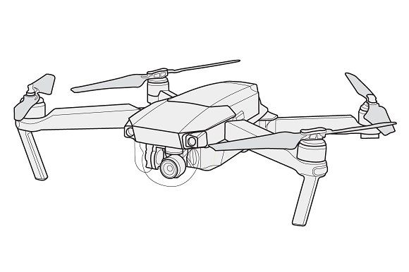
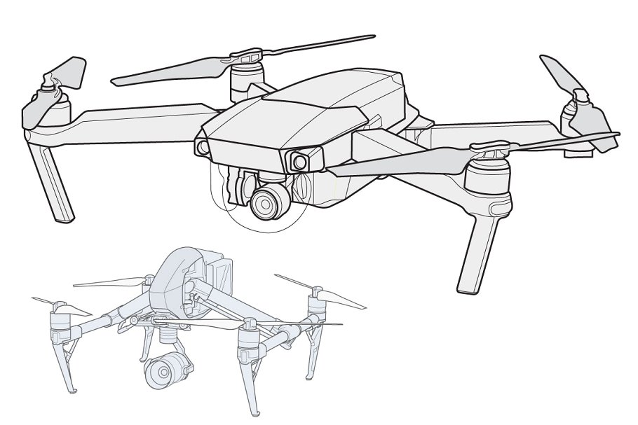
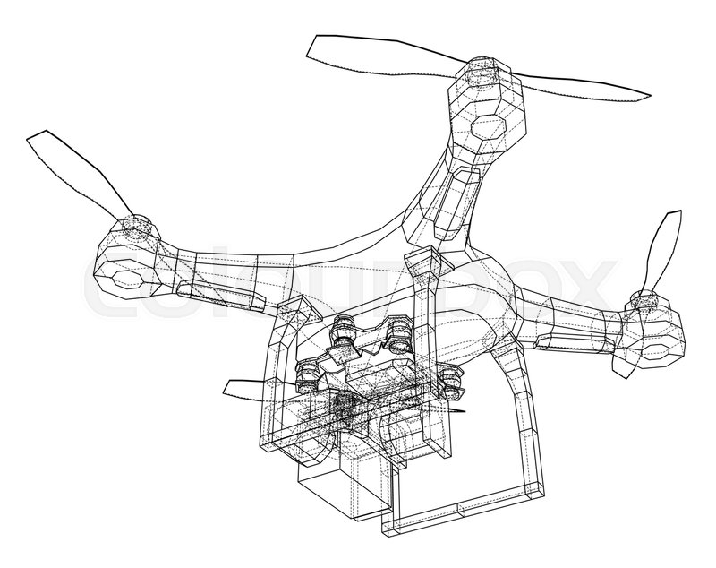

Un dron es un vehículo capaz de volar y de ser comandado a distancia, sin que se requiera de la participación de un piloto. Existen drones de todos los tamaños y orientados a finalidades distintas, sobre todo en los últimos años. No obstante, es importante señalar que artefactos de este tipo existen desde hace bastante tiempo, aunque por supuesto nunca fue tan barato fabricarlos, ni tampoco poseían la gran cantidad de características que poseen en la actualidad. Hoy en día es posible tener drones que filman el territorio desde la altura y que son guiados mediante un programa instalado sobre una tableta o un teléfono inteligente.
Esta Hecho con la idea de vigilar y cuidar los espacios limpios en la ciudad llevando con el una camara para vigilar que se cumpla con los metdos de reciclaje y cuidadndo que este se realise de forma crrecta (no mezclar papeles con plasticos o elementos organicos) al no mesclar elementos no correspondientes en los dibersos lugares de reciclaje. La principal idea del Dron-Recicla es poder identificar a las personas que tiran basura de forma descontrolada en plazas y espacios publicos y notificarlo a autoridas y medios competentes para que tomen medidas en esta situaciones.
Muestra simple del diseño del Dron:
Muestra mas amplaida de haciendo enfasis en la cara del Dron:
Muestra del Dron desde otro angulo:
